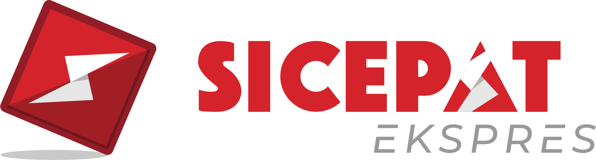
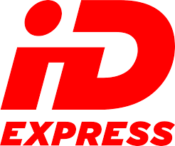
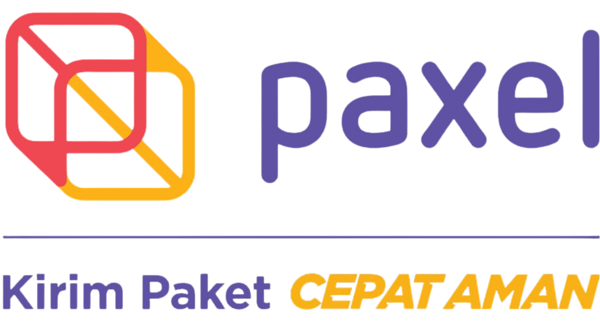
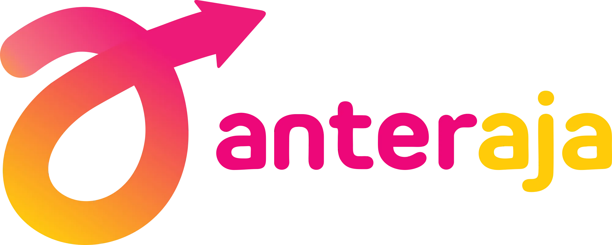
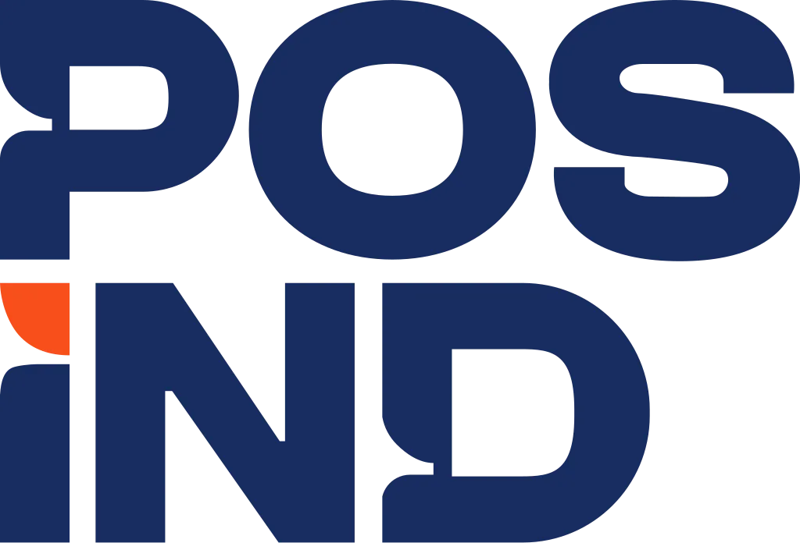
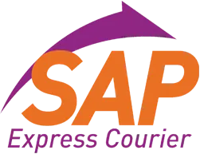
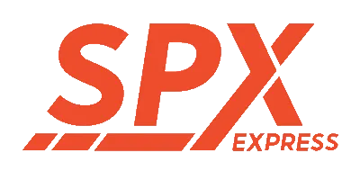
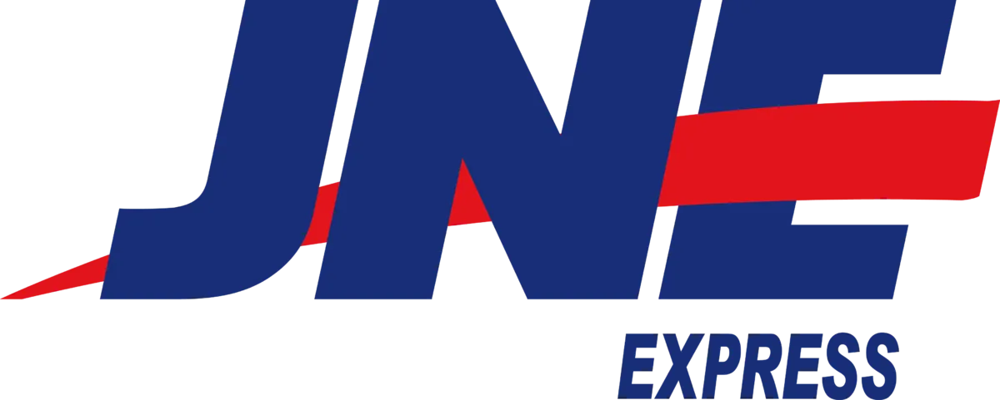
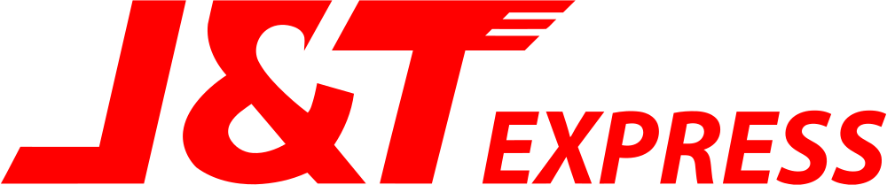

Arsitektur Ekosistem
Simbiosis Mutualisme Area Terpusat
Mitra tidak hanya mencari pelanggan ritel secara manual, melainkan bertindak sebagai Konektor Pusat (Hub) yang mengelola lalu lintas barang dan transaksi dari berbagai agen satelit.
Ratusan Agen &
Satelit Lainnya
MITRA DI SINI
QSIR Drop Point Center
+ Pusat Fulfillment
Pusat Konsolidasi, Inbound, Outbound, & Penyimpanan Stok.
Fixed Handling Fee Rp 300/paket *
Super App System
Integrasi Gudang Ekspedisi Nasional










* Syarat dan Ketentuan (S&K) berlaku untuk pencairan Handling Fee operasional.